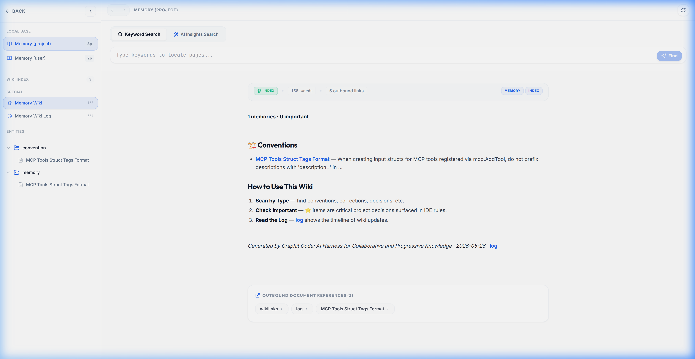
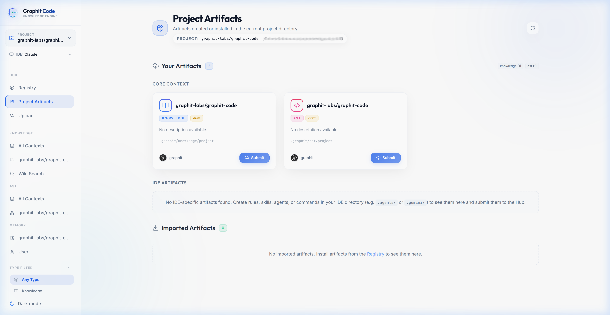
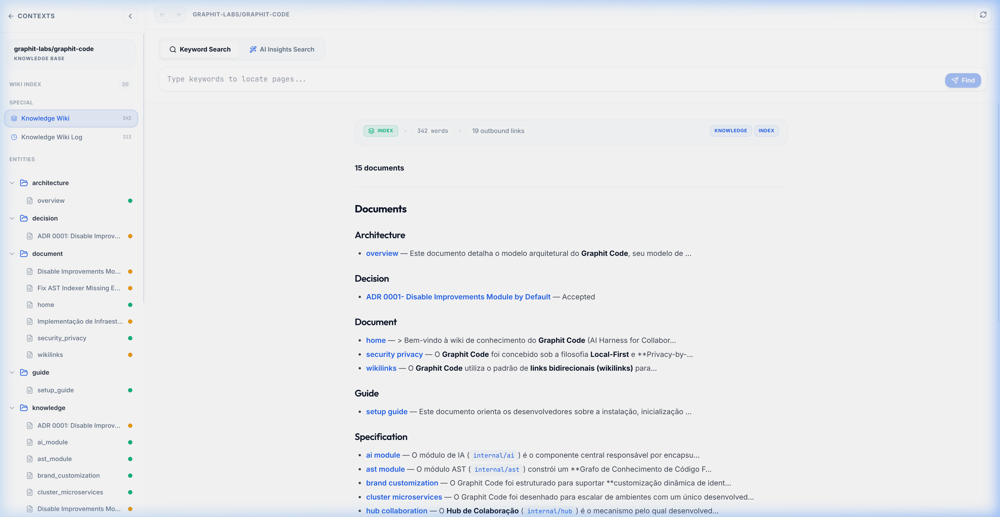

Shift from being a solo engineer working with an AI assistant to a real collaborative flow within a complete enterprise ecosystem. Graphit Code provides deterministic code understanding, persistent memory, and seamless sharing across all your projects.
Without a harness, your agent starts from zero every session, hallucinates APIs, and forgets context.
Instant, auto-incremental, and zero-cost local LLM integration via your IDE.
Built for blazing fast Go performance. Parses every file using Tree-sitter into LadybugDB. Query deterministic code structures with Cypher. Eliminates hallucinations by grounding answers in exact structural truths, and drastically reduces LLM token usage by passing only precise nodes instead of massive files.
Your corrections and decisions persist automatically. Git-backed storage ensures full history. The Improvements Module works autonomously during your idle time to refine this memory.

A decentralized, Git-based artifact registry. Import what your team knows, publish what you discover. Fosters progressive knowledge across the entire enterprise ecosystem, ensuring that every project benefits from shared intelligence. 100% private and trackable.
LLM Wikis
Code Graphs
Agent Skills
Coding Standards
Agent Profiles
IDE Bridge Configs
Agent Actions
Bundled Artifacts

Designed explicitly for agents. Replaces opaque vector embeddings with deterministic self-discovery and explicit back-referencing. The agent organically navigates the wiki graph, guaranteeing 100% precise context retrieval without hallucinated semantic matches.

Autonomous background orchestration. During idle time, it continuously reflects on your codebase to propose refactorings and audits based on strict, high-standard engineering best practices.
Your agent knows every project on your machine. Auto-configurable rules and smart routing keep context intact across all microservices.
Perform AST Cypher queries across all discovered projects. Retrieve real function signatures across repo boundaries.
The agent reads sibling wikis, memories, and architectures to understand enterprise conventions and auth flows natively.
Reads actual routes and DTOs from sibling projects to generate precise integration code, completely eliminating API hallucinations.
Uncompromising privacy, performance, and flexibility.
All data stays on your machine. 100% anonymous tracking via Git repo.
No extra API keys. Uses your local IDE CLI integration natively.
Runs smoothly in the background to automatically keep your knowledge and code graphs perfectly aligned in real-time.
Single binary, zero machine dependencies. Ready to deploy anywhere.
Customizable default rules global or per-project. IDE agnostic.
Linux, macOS, Windows. Seamless integrations for major IDEs.
Single Binary, Full Platform.
Zero dependencies. Use GitHub Artifacts or compile via make.